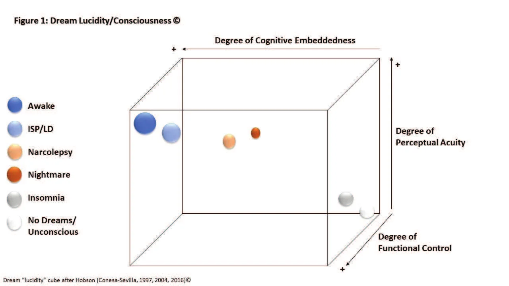

Le sujet n'est rien d'autre que ce qui glisse dans une chaîne de signifiants, qu'il sache ou non de quel signifiant il est l'effet. Jacques M.E. LacanOriginal anglais : The subject is nothing other than what slides in a chain of signifiers, whether he knows which signifier he is the effect of or not.
Même au sein du vaste champ d'appartenance que désigne l'expression « psychologues professionnels », on trouve des points de vue divers sur ce qui constitue la « vérité », quant à la disposition à accepter pour argent comptant la réalité phénoménologique du « client ». Cette approche bienveillante, et parfois nécessaire, peut à l'occasion masquer la complexité de l'esprit humain, sa capacité de confabulation créative, des deux côtés. Autrement dit, on suppose qu'un certain nombre de psychologues professionnels poursuivent leurs études et achèvent leur formation en conservant des biais de prédilection : anti-science, pro-« esprit », pro-ovni. Un examen plus attentif de ce que ces interactions pourraient recouvrir, et de leur rôle dans la prolongation d'un récit d'« altérité » extraterrestre, pourrait donc éclairer ces processus d'un point de vue fondé sur les preuves. Tous les récits d'« enlèvement » ne peuvent pas être expliqués ; certains, toutefois, peuvent contenir suffisamment de régularités probantes pour suggérer des mécanismes explicables.
Même en abordant la validité du témoignage tel qu'il se rapporte au « phénomène ovni » depuis diverses perspectives psychologiques fondées scientifiquement (par exemple sensation et perception, cognition, facteurs humains, psychologie légale, neurocognition), il serait trop simpliste de regrouper selon le contexte les expériences existantes (de toutes sortes) sous un même parapluie théorique et empirique. Par exemple, observer des objets volants non identifiés (ovnis) de jour comme de nuit, prétendre avoir vu des « extraterrestres » en plein air, affirmer que des « extraterrestres » étaient présents dans sa chambre, et en outre prétendre que des sujets ont été immobilisés et emmenés ailleurs pour des examens médicaux (ce qui a été rapporté sous hypnose comme au cours de conversations ordinaires) sont autant de domaines d'intérêt théorique et empirique distincts.
Affirmer la véracité de l'une des situations ci-dessus (plusieurs personnes ont vu, en plein jour, des sphères réfléchissantes d'aspect inhabituel et les ont filmées), puis extrapoler ces faits pour imaginer des visites extraterrestres et d'autres éléments de prédilection du folklore ovni, relève d'une mauvaise inférence.
Ce qui est psychologiquement important, en revanche, c'est que les dualités premières que l'on trouve dans les expériences et les conclusions relatives aux ovnis et aux « visites extraterrestres » sont les significations mal-bien, perdition-transcendance, damnation-salut. Comme dans la citation de Lacan placée en ouverture Lacan, Jacques: The Seminar of Jacques Lacan: On Feminine Sexuality, the Limits of Love and Knowledge (Encore Edition, Book XX). Edited by Jacques Alain Miller and translated by Bruce Fink. New York: W. W. and Norton (1st Ed.), , Seminar XX: 50, une grande part de ce que vivent les humains repose sur des catégories ontologiques et expérientielles omniprésentes dans notre espèce. La signification est une chaîne sans fin de motifs de sens, centraux et périphériques, nécessaires pour cadrer nos réalités (individuelles et collectives).
Les circonstances expérientielles pré- et post-dormitales propres aux sujets qui affirment avoir été « enlevés », immobilisés et emmenés ailleurs pour des examens médicaux par des « extraterrestres », sont particulièrement intéressantes à la lumière de variables confondantes et convergentes telles que notre prédisposition humaine à une vulnérabilité affective nocturne Boivin, D.B., C.A. Czeisler, D.J. Dijk, F. Duffy, S. Folkard, D.S. Minors, and J.M. Waterhouse: “Complex Interaction of the Sleep-wake Cycle and Circadian Phase Modulates Mood in Healthy Subjects,” Archives of General Psychiatry 54(2), pp. 145–152, Wirz-Justice, A., and F. Benedetti: “Perspectives in Affective Disorders: Clocks and Sleep,” European Journal of Neuroscience 51(1), pp. 346–365, , la probabilité de confondre des états de conscience dynamiques et variables pendant le sommeil Conesa-Sevilla, Jorge: Wrestling with Ghosts: A Personal and Scientific Account of Sleep Paralysis. Bloomington, Indiana: Random House/Xlibris, , et l'incidence, dans une partie de la population humaine, de la paralysie du sommeil isolée (ISP), pour ne citer que quelques facteurs ; et elles obligent les chercheurs sérieux à envisager des hypothèses plausibles et vérifiables Brugger, Peter, M. Regard, and T. Landis: “Unilaterally Felt “Presences”: The Neuropsychiatry of One’s Invisible Doppelgänger,” Neuropsychiatry, Neuropsychology, and Behavioral Neurology 9(2), pp. 114-122, .
Que ce soit dans un travail clinique ou empirique, on gagne peu, et l'on peut faire du tort, à accepter sans réserve le récit subjectif d'une personne manifestement effrayée selon lequel des extraterrestres ou des agents du gouvernement sont la cause première d'un ensemble d'expériences qui pourraient s'expliquer autrement. Une approche fondée sur le rasoir d'Ockham pour trier les explications, bien que non infaillible, pourrait être un meilleur protocole pour évaluer ces expériences étranges.
En menant des études longitudinales à long terme sur la paralysie du sommeil isolée (ISP) ainsi que des centaines d'entretiens avec des sujets, l'auteur a recueilli un large éventail de descriptions de première main de ce que c'est que de vivre diverses expériences de rêve ou semblables au rêve, et de leurs effets sur le bien-être psychologique Conesa-Sevilla, Jorge: “Geomagnetic, Cross-cultural and Occupational Faces of Sleep Paralysis: An Ecological Perspective,” Sleep and Hypnosis: A Journal of Clinical Neuroscience and Psychopathology 2(3), pp. 105-111, Conesa-Sevilla, Jorge: “Isolated Sleep Paralysis and Lucid Dreaming: Ten-year Longitudinal Case Study and Related Dream Frequencies, Types, and Categories,” Sleep and Hypnosis: A Journal of Clinical Neuroscience and Psychopathology 4(4), pp. 132-143, .
L'expérience étrange du sentiment d'une présence (FOP), par exemple, fréquemment rapportée en même temps que des épisodes d'ISP, est intéressante comme explication des histoires de fantômes et d'« extraterrestres », en particulier lorsque le matériau onirique peut se prolonger sous une forme ou une autre quelques minutes après le réveil Conesa-Sevilla, Jorge: “Infra-dreaming and Dream-awake States,” Sleep and Hypnosis: A Journal of Clinical Neuroscience and Psychopathology 18(1), pp. 26-29, . En outre, l'une des expériences canoniques rapportées par de prétendus « enlevés par des extraterrestres » comporte des éléments de paralysie corporelle et de lévitation, le fait d'être déposé sur des tables métalliques froides, de voir des créatures, des « extraterrestres », de couleurs et de tailles diverses (grands, petits, verts, bleus, gris), des lumières vives, et des examens médicaux tantôt agréables, tantôt douloureux.
Que les expériences ci-dessus, prises dans leur ensemble ou isolément, dépeignent des perspectives déformées de ce que des enfants ou des adultes peuvent vivre dans de véritables salles médicales humaines mérite une attention plus soutenue, surtout lorsque d'autres états et expériences connus comme l'ISP et le FOP ont été étudiés scientifiquement. Il est intéressant de noter que, lorsque des épisodes d'ISP et de FOP sont déclenchés en laboratoire, on ne voit ni fantômes ni « extraterrestres ».
Il faut l'admettre, même lorsque des professionnels bien intentionnés mais non spécialistes tentent de définir la paralysie du sommeil à propos d'autres sujets, certaines erreurs factuelles sont commises, comme dans cet exemple :
La paralysie du sommeil est un trouble du sommeil fréquent et non pathologique. Elle survient dans le stade intermédiaire entre le sommeil et la pleine conscience et peut durer de quelques secondes à plusieurs minutes. Elle est souvent caractérisée par des symptômes tels que des hallucinations auditives et visuelles, l'immobilité, un sentiment de présence, la peur, une sensation de pression sur la poitrine, ou la sensation de flotter. Latorre, José, and María Vellisca: “Post-Traumatic Stress Disorder, Suggestibility, and Dissociation Related to Alleged Alien Abductions,” EXPLORE: The Journal of Science & Healing (New York), : S1550-8307(21)00218-4, p. 1
Pour le redire et le préciser, il faut distinguer la paralysie du sommeil isolée, qui survient dans la population
neurotypique sans autres symptômes, de la paralysie du sommeil survenant dans la narcolepsie. Leur formule
(ci-dessus), le stade intermédiaire entre le sommeil et la pleine conscience
, est une description non
technique, dépourvue de précision médicale, qui peut susciter d'autres ambiguïtés et malentendus. L'atonie musculaire
(la paralysie) est une conséquence neurologique normale de l'entrée dans le sommeil paradoxal, à mouvements oculaires
rapides (R.E.M.). En fait, tout humain (tout mammifère) qui s'endort et
entre en sommeil REM est « paralysé ». L'énigme est de savoir pourquoi un
petit pourcentage de la population humaine, de temps à autre et dans certaines conditions, reste « conscient de
soi » et assiste ainsi à une étape d'une suite d'événements en cascade qui commence par la décharge aléatoire de
cellules du tronc cérébral, dans le pont.
Les situations ci-dessus (imagination débridée et erreurs dans la description du sommeil proprement dit) peuvent devenir encore plus confuses lorsque d'autres soi-disant « experts » viennent au secours des « enlevés » en employant diverses méthodologies douteuses ou peu fiables, comme l'hypnose, qui garantit presque qu'un récit, et nul autre, l'emportera Dilani, D. (Director/Producer): “Kidnapped by UFOs? The True Story of Alien Abductions,” DVD, PBS/NOVA: Season 23, Episode 6, .
Les travaux de la chercheuse américaine spécialiste de la mémoire Elizabeth Loftus et de ses collaborateurs ont joué un rôle déterminant en offrant une voie empirique parallèle pour examiner les affirmations d'« enlèvement extraterrestre » Loftus, Elizabeth F., and H.G. Hoffman: “Misinformation and Memory: The Creation of Memory,” Journal of Experimental Psychology: General 118(1), pp. 100–104, Loftus, Elizabeth F., and J.E. Pickrell: “The Formation of False Memories,” Psychiatric Annals 25(12), pp. 720–725, . Son analyse déconstructive, pas à pas, du travail contestable de personnes comme Budd Hopkins et John Mack est un excellent exemple de la rigueur scientifique et des approches de pensée critique que l'on est en droit d'attendre de quiconque se dit professionnel de la santé mentale. De la méprise à la mauvaise interprétation, jusqu'au bricolage d'« histoires à dormir debout », les capacités mythopoïétiques de l'esprit humain ne sauraient être sous-estimées Conesa-Sevilla, Jorge: “Medieval Thinking (MT) in the 21st Century: Crystal Balls, Black Swans, and Darwin’s Finches in the Time of Corona,” The International Journal of Ecopsychology 1(1), Article # 7, .
Compte tenu de la probabilité de facteurs déterminants isolés et/ou concomitants (notre propension évolutive de primates humains à nous sentir anxieux et vulnérables la nuit, la privation de sommeil pour toutes sortes de raisons, l'anxiété, un nombre constant d'individus qui connaissent occasionnellement des ISP et des FOP, l'altération et la modification effectives des souvenirs après coup, et la possibilité que certains individus aient une imagination très vive), une approche de pensée critique fondée sur les preuves est nécessaire face au phénomène des « enlèvements extraterrestres », ne serait-ce que pour étendre le travail de la psychologie légale aux processus empiriques liés au témoignage.
Évaluer des déclarations sur la véracité d'une chose aussi perturbante et anxiogène qu'un « enlèvement extraterrestre », dans lequel des blessures ressenties sont également rapportées et des « suspects » nommés, exige les outils les plus perfectionnés et les plus récents de l'enquête judiciaire, ainsi que la sagacité professionnelle pour mener ces investigations à leur terme. L'enlèvement, les blessures physiques et les violences sexuelles sont, après tout, des crimes. Pourquoi faire appel à un artiste (par exemple Elliot Budd Hopkins) Dilani, D. (Director/Producer): “Kidnapped by UFOs? The True Story of Alien Abductions,” DVD, PBS/NOVA: Season 23, Episode 6, sans formation judiciaire ni psychologique pour enquêter sur ces « crimes », à moins que son travail ne s'inscrive dans une enquête criminelle en cours et sous la direction d'experts judiciaires ?
Dans la littérature consacrée aux prétendus « enlèvements extraterrestres », on lit rarement (voire jamais) un exposé complet sur la façon dont la richesse de l'expérience consciente (éveillée ou endormie) peut contribuer à mal percevoir et/ou mal rapporter des phénomènes étranges.
Même après cinq décennies de recherches approfondies sur le sommeil, lit-on des comptes rendus précis qui expliqueraient les « expériences étranges » de l'« autre type ». C'est-à-dire, comme pour d'autres fossés noétiques entre la science actuelle et à jour et les descriptions populaires de divers phénomènes, que le public naïf se laisse souvent emporter par des « explications » essentiellement impressionnistes et chargées d'émotion.
Comme le montre la figure 1, les nombreuses expériences ordinairement simplifiées à l'excès sous le nom de
« sommeil » peuvent être décrites selon la mesure dans laquelle elles peuvent « donner l'impression » d'être éveillé,
et donc, dans cette hypothèse, être potentiellement rapportées à tort comme des phénomènes étranges qui paraissent
objectivement « réels » aux sujets. Dans le cadre de recherches sur le sommeil, aujourd'hui archivées, menées à
l'Inselspital Universitätsspital de Berne, en Suisse (),
l'auteur a utilisé un questionnaire de 103 items afin de mieux cerner les multiples dimensions des états de
conscience pendant le « sommeil ». Les souvenirs de matériau et d'événements oniriques ont été évalués selon trois
axes factoriels : 1) la mesure dans laquelle une expérience de rêve ressemblait au « monde réel » de l'éveil
(ancrage cognitif) ; 2) la mesure dans laquelle l'expérience perceptive était exacte, semblable (ou pas du
tout) à la conscience éveillée ordinaire (acuité perceptive) ; et 3) la mesure dans laquelle les sujets
pouvaient agir dans leurs « réalités oniriques » comme ils le feraient normalement dans la vie quotidienne
(contrôle fonctionnel). Par exemple, si un sujet rapportait que ça ne ressemblait pas du tout à un
rêve
parce qu'il avait interagi dans un cadre expérientiel comme s'il était éveillé, vu des couleurs vives,
entendu des gens parler, marché, volé ou été paralysé, il obtenait un score élevé à ce questionnaire. Un score élevé
était corrélé aux rêves vifs, aux rêves lucides et/ou aux ISP, aux
FOP et aux prétendues expériences de sortie hors du corps.

On peut, tout aussi facilement, dessiner un « cube de la conscience » semblable pour décrire la phénoménologie de l'« état de veille », et peut-être alors comprendre que notre « sens de la réalité » est complexe et en perpétuel changement, très dynamique. Étant donné la facilité avec laquelle n'importe qui peut être persuadé d'accepter un « faux souvenir » (section précédente) ou se convaincre que des extraterrestres l'ont réellement enlevé, et affirmer ces « faits » avec un haut degré de confiance (voir la section suivante), il est clair qu'un travail approfondi de psychologie légale doit avoir lieu avant que nous n'acceptions ces récits pour argent comptant.
De même, parce que ces événements semblent très réels à ces sujets, il faut, là encore, faire preuve d'un certain degré de compassion et comprendre les émotions qu'ils ressentent réellement. Cependant, prendre une personne dans cet état et la troubler avec des histoires improbables d'enlèvement extraterrestre paraît au mieux malavisé, au pire cruel ou abusif.
Pour reprendre l'introduction, les récits qui relèvent du folklore ovni sont de deux sortes : publics et privés Tedeschi, J.T.: “Private and Public Experiences and the Self,” in Public Self and Private Self, edited by R.F. Baumeister, New York: Springer, , p. 2. Les premiers comprennent par exemple les situations où plusieurs personnes voient, en plein jour, des sphères réfléchissantes d'aspect inhabituel et les filment. On peut consulter des météorologues, des ophtalmologistes et des experts en technologie vidéo pour vérifier l'authenticité de ces affirmations publiques. L'expérience dite d'« enlèvement extraterrestre » est privée. Aussi les expériences privées et étranges survenant au coucher ou pendant la nuit, dans l'intimité, sont-elles des affirmations difficiles, voire impossibles, à vérifier, et leur valeur probante doit être soumise à un examen plus rigoureux.
Les expériences privées, selon les termes de Tedeschi Tedeschi, J.T.: “Private and Public Experiences and the Self,” in Public Self and Private Self, edited by R.F. Baumeister, New York: Springer, , désignent :
…des événements mentaux chez une personne qui sont par nature inobservables par une autre personne. L'acteur est considéré comme ayant le choix de révéler ou non ces événements privés à d'autres, c'est-à-dire de les rendre publics. Une question connexe est de savoir s'il existe des événements cognitifs qui ne peuvent pas être « observés » par la personne en qui ils se produisent (Nisbett & Wilson, 1977). Les psychanalystes soutiennent depuis longtemps que l'essentiel de la vie mentale est inconscient (par exemple Freud, 1938).
La dernière phrase de sa citation fait allusion à des biais cognitifs et à des propensions épistémologiques qui peuvent échapper à de nombreux observateurs : une subjectivité intérieure que seuls des professionnels de la santé mentale hautement qualifiés peuvent démêler puis évaluer. Pour le redire, la facilité avec laquelle chacun de nous peut reconstruire un événement de façon erronée, naturellement et sans intention de tromper, ressort clairement des travaux d'Elizabeth Loftus et d'autres chercheurs Garry, M., Elizabeth F. Loftus, C. Manning, and S. Sherman: “Imagination Inflation: Imagining a Childhood Event Inflates Confidence that it Occurred,” Psychonomic Bulletin and Review 3(2), pp. 208–214, Loftus, Elizabeth F.: “Imagining the Past,” The Psychologist 14(11), pp. 584–587, Strange, D., K. Wade, and H. Hayne: “Creating False Memories for Events that Occurred Before Versus After the Offset of Childhood Amnesia,” Memory 16(5), pp. 475–484, Newcombe, N., A. Drummey, N. Fox, E. Lai, and W. Ottinger-Alberts: “Remembering Early Childhood: How Much, How, and Why (or Why Not),” Current Directions in Psychological Science 9(2), pp. 55–58, .
En particulier, le processus d'inflation par l'imagination Garry, M., Elizabeth F. Loftus, C. Manning, and S. Sherman: “Imagination Inflation: Imagining a Childhood Event Inflates Confidence that it Occurred,” Psychonomic Bulletin and Review 3(2), pp. 208–214, [Note de RR0] Le livre appelle ici les notes 14 et 15, qui citent le documentaire de NOVA et Tedeschi ; les références sur l'inflation par l'imagination sont celles de la note 17, données plus haut. et une notion apparentée, l'effet Dunning-Kruger Kruger, Justin, and David Dunning: “Unskilled and Unaware of It: How Difficulties in Recognizing One’s Own Incompetence Lead to Inflated Self-assessments,” Journal of Personality and Social Psychology 77(6), pp. 1121–34, , pourraient, seuls ou conjointement, expliquer pourquoi ceux qui vivent de prétendus « enlèvements extraterrestres » et ceux qui les y encouragent sont en proie à un sentiment d'excès de confiance en l'absence de la formation nécessaire pour évaluer ces expériences (leurs propres connaissances ou leur absence). Pour simplifier ces deux notions, leur sentiment même d'excès de confiance les rend aveugles à leur incapacité à juger leur propre incompétence Kruger, Justin, and David Dunning: “Unskilled and Unaware of It: How Difficulties in Recognizing One’s Own Incompetence Lead to Inflated Self-assessments,” Journal of Personality and Social Psychology 77(6), pp. 1121–34, .
En outre, il existe une croyance de psychologie populaire tenace mais fausse selon laquelle seul le sujet serait qualifié pour scruter avec justesse, par des actes de foi et/ou par intuition, les rouages intimes de sa propre psychologie. Une personne légitimement terrifiée par ces agressions, mais qui ne veut rien avoir à faire avec un psychologue attaché à la pensée critique, peut finir par adopter la notion la plus farfelue susceptible d'expliquer ses expériences. Dans ces circonstances, elle peut être victime de « bullshit » pseudo-profond/scientifique Pennycook, Gordon, J.A. Cheyne, N. Barr, D.J. Koehler, and J.A. Fugelsang: “On the Reception and Detection of Pseudo-profound Bullshit,” Judgment and Decision Making 10(6), pp. 549–563, Evans, A., W. Sleegers, and Z. Mlakar: “Individual Differences in Receptivity to Scientific Bullshit,” Judgment and Decision Making 15(3), pp. 401-412, Čavojová, V., I. Brezina, and M. Jurkovič: “Expanding the Bullshit Research Out of Pseudo-Transcendental Domain,” Current Psychology, 1-10, . Outre les différences individuelles évoquées dans la première section, il pourrait exister chez certains individus des propensions psychologiques à préférer les explications non orthodoxes ou à se montrer systématiquement crédules dans plusieurs autres domaines Evans, A., W. Sleegers, and Z. Mlakar: “Individual Differences in Receptivity to Scientific Bullshit,” Judgment and Decision Making 15(3), pp. 401-412, .
À ces conditions, il faut ajouter toute idée ou proposition pseudo-scientifique qui n'est ni reconnue par la plupart des experts d'un domaine donné, ni conforme aux protocoles empiriques habituels. Par exemple, dans la mesure où la pratique de l'hypnose, par sa méthodologie et sa nature mêmes, exige une disposition à accepter des suggestions, elle n'est peut-être pas la méthode appropriée pour examiner les affirmations d'« enlèvement extraterrestre ». Les techniques et inductions hypnotiques peuvent se justifier dans des conditions très protocolisées et supervisées, mais sont gravement inadaptées, voire nuisibles, lorsque leur usage n'est pas encadré.
Dans le même ordre d'idées, on suppose aussi qu'un certain nombre de psychologues professionnels poursuivent leurs études et achèvent leur formation en conservant des biais de prédilection : anti-science, pro-« esprit », pro-ovni. Un examen plus attentif de leurs motivations professionnelles et de leur rôle dans la prolongation de ces récits étranges pourrait donc non seulement éclairer le processus qui favorise le récit d'« enlèvement », mais même aider à comprendre comment l'agrément et le renouvellement de l'agrément professionnels permettent, dans certains États et pays, à certains praticiens de continuer à exercer leur influence malavisée. Cela ne veut pas dire, en toute équité, que la plupart des psychologues seraient enclins à considérer un récit d'« enlèvement extraterrestre » comme objectivement réel.
Pour être juste et compatissant, il faut toujours comprendre que l'étrangeté et l'intensité des prétendus « enlèvements extraterrestres » peuvent facilement pousser ceux qui les vivent à chercher des explications tout aussi étranges, alors que la réponse pourrait relever, sinon d'une explication plus simple, du moins du domaine de la neuropsychiatrie et de la neurobiologie : la science du sommeil.
La psychologie humaine est complexe mais pas, en définitive, impénétrable. Les découvertes scientifiques des soixante dernières années ont montré et suggèrent que, bien que la psychologie humaine soit bien plus complexe que les Anciens ne l'imaginaient, ses mécanismes computationnels organiques sous-jacents se prêtent à l'étude et à la maîtrise, et davantage à chaque décennie. Aucune dose de conjecture philosophique ni de « techniques » improvisées au fil de l'eau ne peut remplacer des méthodologies scientifiques rigoureuses. Cela ne signifie pas, d'un autre côté, qu'une « science » où tout est permis, ou la juxtaposition facile d'une notion connue dans un domaine (par exemple l'intrication quantique), puisse être aisément transposée dans un autre (par exemple la conscience) afin d'expliquer une troisième idée, absurde (par exemple l'évolution spirituelle).
Dans l'introduction, nous avons soutenu que les dualités premières que l'on trouve dans les expériences liées aux ovnis et aux « visites extraterrestres », et dans les interprétations qu'elles contiennent, revisitent des catégories et des figures universelles du mal-bien, de la perdition-transcendance, de la damnation-salut, et que cela est psychologiquement important. Pour invoquer Lacan une fois encore, le sujet phénoménologique est un pion de la dynamique de l'« altérité », la sienne et celle des autres. Ce vaste espace sémiotique dynamique est en perpétuel mouvement.
Une grande partie du folklore ovni aborde directement ces catégories universelles ou y fait allusion. Un « enlevé par des extraterrestres » peut en venir à croire que, si désagréables que soient ses expériences, il est au centre de quelque chose de grandiose. Comme dans nombre de conceptions mythologiques, une vierge est prise par un dieu puissant pour porter son enfant demi-dieu. Que cette violation se soit faite contre sa volonté pèse peu face au fait d'être élue pour une occasion aussi capitale et mythique. Des personnages divins, mettant en scène une grande part de la psychologie humaine, signifient tout autant la « perdition » et la « transcendance », la « damnation » et le « salut ». Celui qui entretient le délire peut lui-même se faire volontiers complice du fantasme récurrent : des dieux rencontrent des humains sous de multiples formes et à travers les âges, une tragédie de Heaven’s Gate prête à se produire “Heaven’s Gate: A Timeline,” The San Diego Union Tribune, , accessed .
En dessous, cependant, un dysfonctionnement synaptique décelable, une séquence de sommeil manquée et un cerveau enclin à la représentation confabulent et assemblent un récit étrange qui satisfait les tendances culturelles ou les idées sur les extraterrestres. Que l'une ou l'autre de ces explications, et d'autres, ne soient pas d'abord dûment examinées donne à penser que quelque chose dans l'idée de « la visite céleste » est à la fois séduisant et durable dans notre mythologie collective. Et une fois libres de vagabonder dans notre imagination, toutes les combinaisons de ces récits se valent : chamans et ovnis, gremlins et avions défaillants, Jésus et les petits hommes verts, ou des civilisations reptiliennes existant actuellement et simultanément dans une Terre creuse.
Le citoyen moyen, ose-t-on avancer, vit sans savoir que sa perception de la couleur « rouge » est une invention, et qu'en fait toutes ses expériences sont des représentations cérébrales, une réalité virtuelle. Que la personne naïve et sans instruction qui vit ces expériences n'ait pas accès à la mécanique humide de sa machine computationnelle, le cerveau humain, est compréhensible. Que des personnes bien intentionnées mais incompétentes alimentent les délires est problématique, mais reste compréhensible si elles sont aussi naïves que leurs propres « clients ». Que des professionnels manipulateurs profitent sciemment de personnes naïves pour se retrouver sous des projecteurs qui leur échapperaient sinon est abusif et pourrait être considéré comme criminel.
Étant donné le fait scientifique que les cerveaux humains représentent le monde, en infèrent et lui donnent sens du mieux qu'ils peuvent, il est prudent de chercher des réponses dans la dynamique des circuits cérébraux plutôt que très loin, là-bas, dans les étoiles.
Ma gratitude à C. L. B., J. N. et W.D. pour leurs retours.